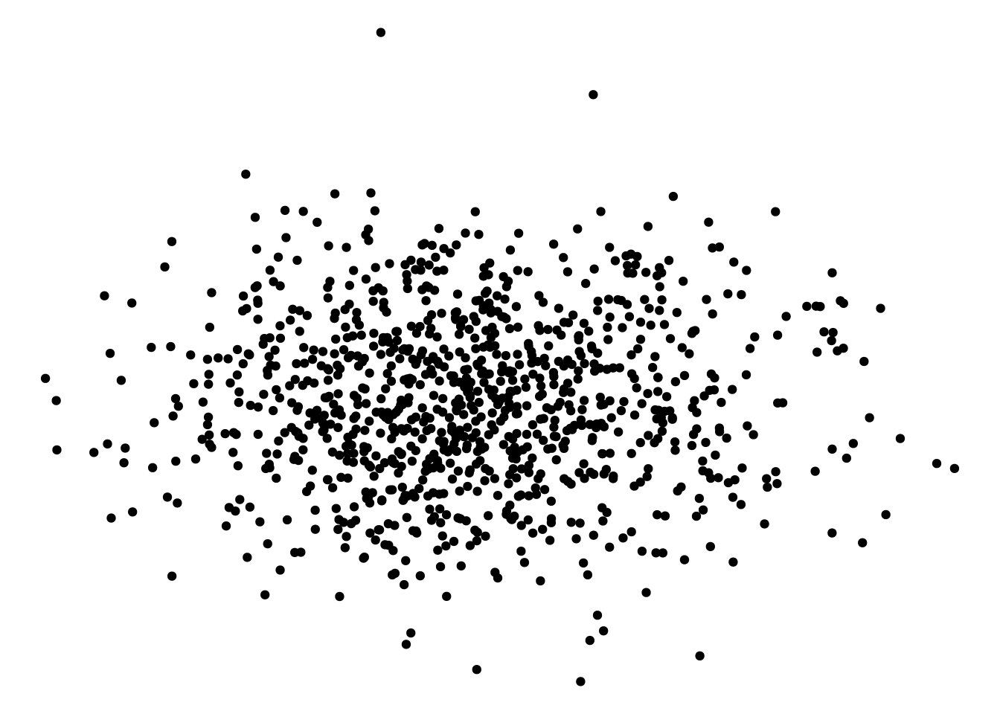

Code
p1 <- penguins |> ggplot(aes(x=species, y = body_mass_g)) +
geom_jitter() +
geom_boxplot() +
labs(x = "Species", y = "Body Mass")
p2 <- penguins |> ggplot(aes(x=flipper_length_mm, y = body_mass_g)) +
geom_point() +
labs(x = "Flipper Length", y = "Body Mass")
p1 + p2